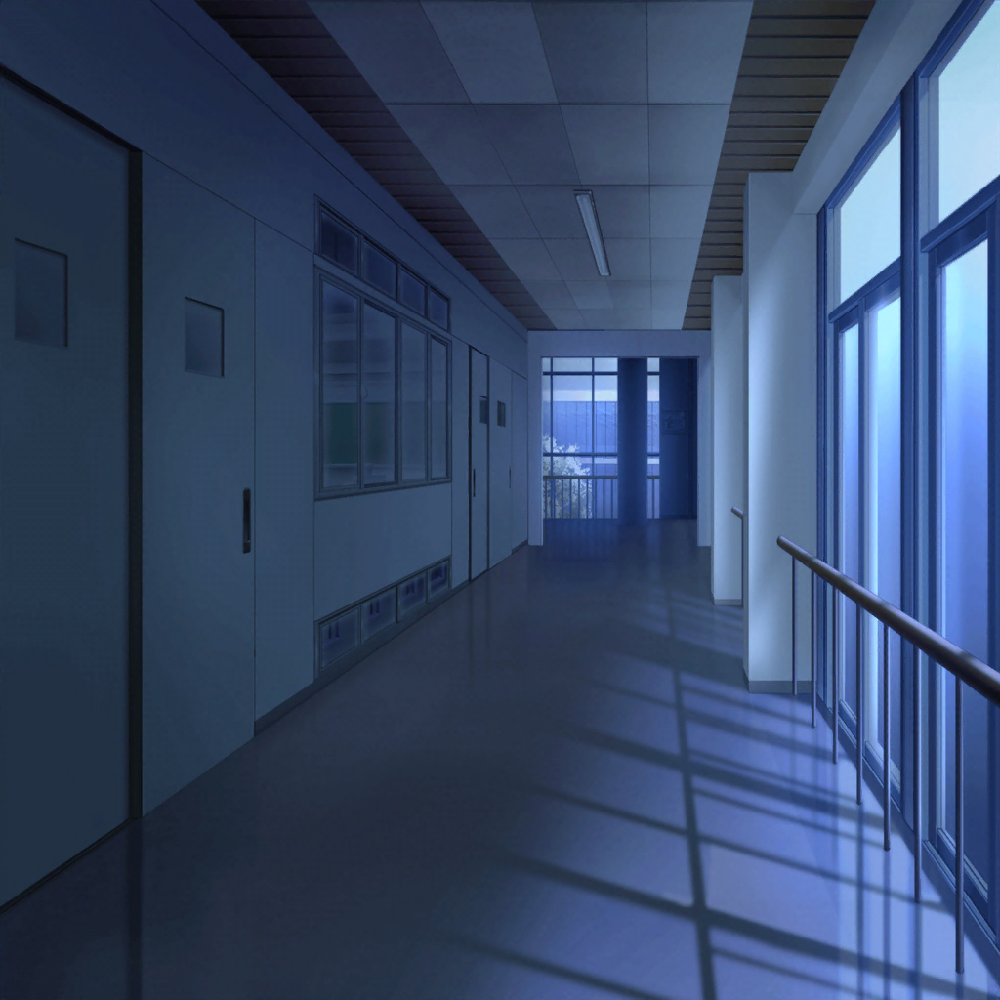
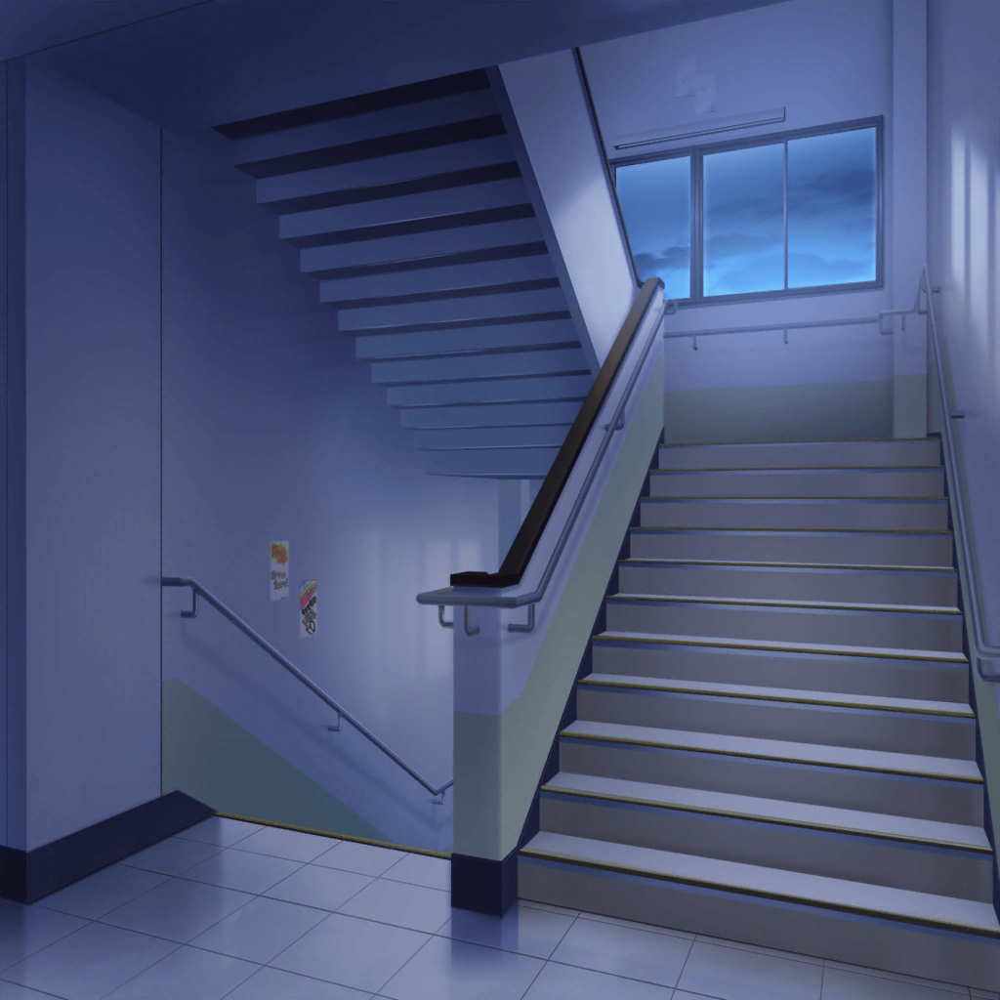

羽丘女子学園 廊下
つぐみ
えっと……体育館に行くには……
２階から渡り廊下を通って実習棟のほうに
行くのが一番近道、かな？
巴
だな
ひまり
階段をあがって渡り廊下を通るだけなのに、
体育館がめちゃめちゃ遠く感じるね……
つぐみ
ひまりちゃん、頑張ろう……！

巴
この階段から上にあがるのが一番近そうだな
ひまり
うう……
モカ
ひーちゃん、どしたのー？
ひまり
モカが言ってた七不思議、思い出しちゃって……
蘭
ちょ、ひまり……！
ひまりのせいであたしも急に思い出しちゃったじゃん！
ひまり
だ、だってぇ〜！！
巴
まさかひまり、七不思議を信じてるのか？
ひまり
なんか、妙にリアルだし……巴は信じてないの？
巴
あ、アタシは、信じないぞ！
迷信、迷信！
モカ
……ん？ ああ、階段の段数が増えてるって話のことか〜
ひまり
今やっとわかったの！？
モカ
ひーちゃん、気にしすぎだって。
階段が突然増えるわけないじゃん〜？
ひまり
もぉ〜！ こんなに気にしてるのも全部モカのせいなんだからね！
モカ
ていうか、いつもの階段の段数なんて知らないし、
増えてても気づかなくない？
巴
確かに……
蘭
モカ、たまにはいいこと言うじゃん
モカ
へへー。モカちゃん、実はいつもいいこと言ってるんだけどな〜
つぐみ
学校の階段、確か１２段だったと思う。
私、生徒会の仕事で校内の清掃をよくするんだけど、
掃除してるうちに階段の段数も覚えちゃって
巴
つぐ……その情報は知りたくなかったよ……
ひまり
階段の数……知ってしまった……
つぐみ
はっ……！ ご、ごめん！！
蘭
階段は１２段……ねえ、みんな。数えながら上ってみない？
そうすれば、七不思議は嘘だってこと証明できるよね
ひまり
でも、数えてみて１３段あったら……？
蘭
そ、その時はその時！ ……ていうか、階段が増えてようが
別にあたし達の身に何かおきるわけじゃないし
モカ
確かに〜。蘭もたまにはいいこと言うじゃん？
蘭
いつも、だよ
つぐみ
よ、よし！ それじゃあ、みんなで数えながら上ってみよう。
１，２……
ひまり
３，４……
蘭
１０，１１……
ひまり
１２！
やっぱり、七不思議なんてうそ……
？？？
１３！
ひまり
も〜、巴、冗談言わないでよ〜！
巴
え？ アタシは何も言ってないぞ
蘭
今『１３』って言ったよね？
巴
いやいや、そんなこと言ってないって
モカ
あたしにもトモちんの声、聞こえた〜
つぐみ
私にも聞こえたよ
一同
……
蘭
……早く、先進もう！！
ひまり
そ、そうだね！ あはは〜、進もう進もう！
レッツゴー！ ゴーゴー！！
モカ
ひーちゃんが壊れてしまった……
つぐみ
……この先、何も起きないといいなあ……